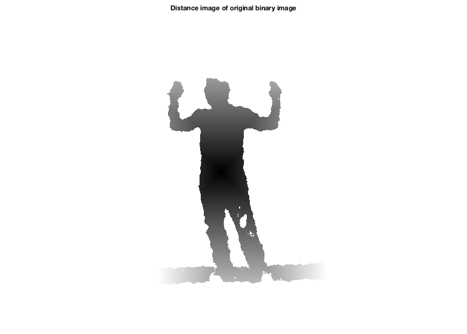
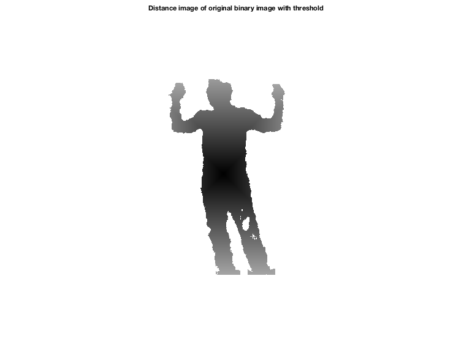

fprintf('a)\n');
fprintf('Distance transform is an operator applied to binary images that\n');
fprintf('that results in a grayscale image, where the distance from the\n');
fprintf('closest boundary determines the intensities of the gray scale.\n');
fprintf('\n\n');
fprintf('Two distance types are Manhattan distance and Euclidean distance:\n');
fprintf('\tIn Manhattan distance, the distance between two points is the\n');
fprintf('\tsum of the difference in absolute differences of the Cartesian\n');
fprintf('\tcoordinates.\n');
fprintf('\tIn Euclidean distance, the distance between two points is the\n');
fprintf('\tstraight line distance between two points in Euclidean space.\n');
fprintf('\tIn other words, it is the square root of the sum of the squares\n');
fprintf('\tof its Cartesian coordinates.\n');
fprintf('b)\n');
lowerThresh = 959;
upperThresh = 978;
binImage = (range > lowerThresh) & (range < upperThresh);
distGray = bwdistgeodesic(binImage, [300], [261]);
figure(1);
distGray(isnan(distGray)) = 255;
imshow(distGray,[0,255]);
title('Distance image of original binary image');
fprintf('c)\n');
threshold = 164;
distGray2 = distGray;
distGray2(distGray2 > threshold) = 255;
figure(2);
imshow(distGray2,[0,255]);
title('Distance image of original binary image with threshold');
fprintf('d)\n');
fprintf('\tThe distance transform allows filtering of objects that are far\n');
fprintf('\tfrom the seed points. This was effective in removing the unnecessary\n');
fprintf('\tbottom board that was attached to the filtered person in the bwselect\n');
fprintf('\tfiltering method. However, the feet were chopped off the filtere person.\n');
a)
Distance transform is an operator applied to binary images that
that results in a grayscale image, where the distance from the
closest boundary determines the intensities of the gray scale.
Two distance types are Manhattan distance and Euclidean distance:
In Manhattan distance, the distance between two points is the
sum of the difference in absolute differences of the Cartesian
coordinates.
In Euclidean distance, the distance between two points is the
straight line distance between two points in Euclidean space.
In other words, it is the square root of the sum of the squares
of its Cartesian coordinates.
b)
c)
d)
The distance transform allows filtering of objects that are far
from the seed points. This was effective in removing the unnecessary
bottom board that was attached to the filtered person in the bwselect
filtering method. However, the feet were chopped off the filtere person.
 